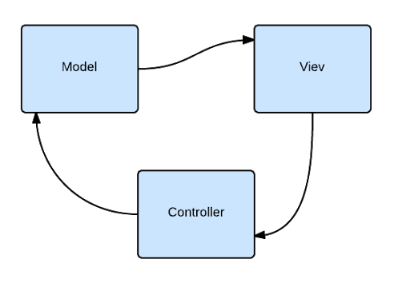
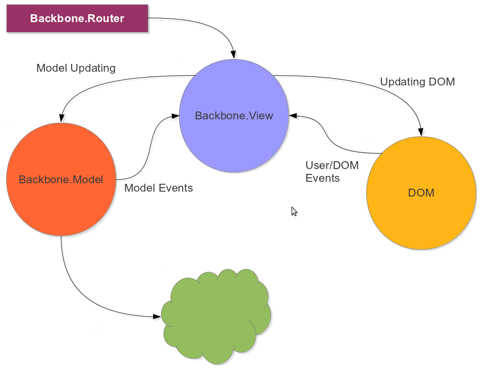
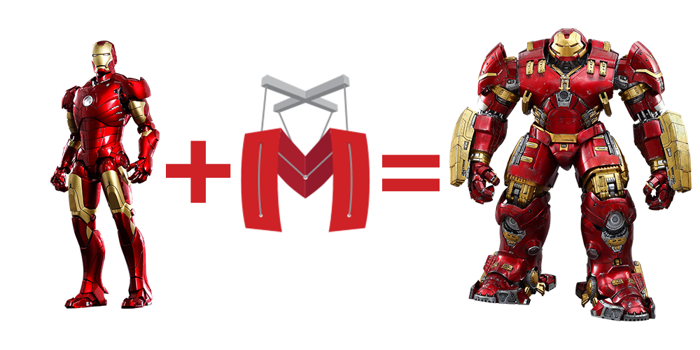

Backbone.js
class: center, middle .title[ Front-end training # Backbone.js ] --- # MVC architecture  - Model–View–Controller (MVC) is a software architectural pattern for implementing user interfaces. - It divides a given software application into three interconnected parts, so as to separate internal representations of information from the ways that information is presented to or accepted from the user. --- <img src="img/backbone-logo.png" style="width: 60%;" /> Developed by [Jeremy Ashkenas](https://github.com/jashkenas) who is also behind such famous projects as [underscore.js](http://underscorejs.org) and [coffeescript](http://coffeescript.org/) Backbone.js is in top *10* starred (~22k stars) [project](https://github.com/jashkenas/backbone)s on Github, and for a good reason. The library is only ~1600 lines of a [well documented code](http://backbonejs.org/docs/backbone.html). So it is only 6.5kb, packed and gzipped. Backbone.js gives structure to web applications by: - providing models with key-value binding and custom events - collections with a rich API of enumerable functions (which actually come from underscore.js) - views with declarative event handling - connects it all to your existing API over a RESTful JSON interface. --- # Main parts .columns[.col-40[ Unboxing: - Model - View - Collection - Router Dependencies: - Underscore.js - jQuery ].col-60[  ]] --- # Model ```javascript var President = Backbone.Model.extend({ defaults: { name: 'John', // defaults are overwritten with whatever passed on instantiation surname: '' }, // runs on instance creation initialize: function(attributess) { alert('Hello underlings, i am ' + attributes.name); // attributes to be 'set' on model } }); var president = new President({ name: 'Bill', surname: 'Clinton' }); // always use setter and getters instead of directly reaching properties president.set('name', 'William'); president.set({ name: 'George', surname: 'Bush' }); var name = president.get('name'); // => 'George' ``` --- # REST REST (Representational State Transfer) is an architectural style for designing distributed systems. - Resources expose easily understood directory structure URIs. - Representations transfer JSON or XML to represent data objects and attributes. - Messages use HTTP methods explicitly (for example, GET, POST, PUT, and DELETE). - Stateless interactions store no client context on the server between requests. State dependencies limit and restrict scalability. The client holds session state. ### CRUD (create, retrieve, update, delete) ```bash Create : POST /presidents Retrieve: GET /presidents/1 Update : PUT /presidents/1 Delete : DELETE /presidents/1 ``` --- # Model and CRUD ```javascript var President = Backbone.Model.extend({ urlRoot: '/presidents' }); // create new model var president = new President({ name: 'Vova', surname: 'Putin' }); president.save(); // sends POST to /presidents // update model and do something on callback president.save({ name: 'Barack' }, { // sends PUT to presidents/#id success: function (model, response, options) { /* ... */ } }); // since all sync methods return jqXHR object, we can use Promise approach president.save({ surname: 'Obama' }) .fail( function( jqXHR, textStatus, errorThrown ){ /* show error */ }) //get model var somePresident = new President({ id: 2 }); somePresident.fetch(); // GET /presidents/2 and resets data of an instance //delete model somePresident.destroy(); // DELETE presidents/2 and triggers 'destroy' event ``` --- # Model other features ```javascript var President = Backbone.Model.extend({ validate: function( attributes ){ if( attributes.surname === 'Tymoshenko' ){ return 'Tymoshenko can not be a president'; } } }); // ... president.on('invalid', function(model, error) { alert(error); }); var president = new President({ name: 'Bill', surname: 'Clinton' }); // listen to a particular property of a model president.on('change:name', function( model ){ alert('Changed name to ' + model.get('name'); ); }); ``` --- # Collection ```javascript var PresidentsCollection = Backbone.Collection.extend({ // with 'model' property set, raw data converted as a model of a proper type model: President }); var presidentsCollection = new PresidentsCollection ([ { name: 'George', surname: 'Washington' }, { name: 'Barack', surname: 'Obama' } ]); // collections have Array methods presidentsCollection.push(new President({ name: 'Petro', surname: 'Poroshenko'})); // as model are added, use comparator to sort collection by name presidentsCollection.comparator = 'name'; // or by surname presidentsCollection.comparator = function(model) { return model.get('surname'); }; // you can call any underscore method to work with collection var namesList = presidentsCollection.contains('Tymoshenko'); // => false ``` --- # View ```javascript var PresidentView = Backbone.View.extend({ tagName: 'li', // element is created on instantation and is reachable via 'this.el' className: 'president', // css class to be added to 'this.el' // underscore gives micro templating engine template: _.template('<span><%= name %> <%= surname %></span>'), render: function(){ // $el is a jquery wrapper over this.el // pass serialized model to template this.$el.html( this.template( this.model.toJSON() ) ); return this; // return this to can chain methods }, // map of events and handlers events: { 'click': 'onClick' }, onClick: function() { // 'this' coresponds to the instance of a view alert('Click on ' + this.model.get('name') ); } }); // pass model to view, render data and insert your view into document $('#app').html( new PresidentView({ model: presidentModel }).render().$el ); ``` --- # Router ```javascript var AppRouter = Backbone.Router.extend({ // map of urls and handlers as in view events routes: { '*actions': 'defaultRoute', // example.com/#anything-here 'president/:name': 'presidentRoute' // example.com/#president/Barack } }); var router = new AppRouter; // set handlers on route instance router.on('route:presidentRoute', function(name) { // e.g. fetch data of a president by name and show PresidentView }); Backbone.history.start(); // monitor url changes router.navigate('president/2', { trigger: true }); // change url and notify change handler ``` --- # When to use? - I use RESTful API - My team has many experienced JavaScript developers - Application requires integration with some other 3rd party libraries - Application is going to do a lot of heavy DOM manipulations --- # More power?  - Application, Item View, List view, Template Cache, Callbacks, etc... --- # Related resources - API/DOCS - http://backbonejs.org - http://backbonejs.org/docs/backbone.html - http://underscorejs.org - Learn BB - http://addyosmani.github.io/backbone-fundamentals - http://code.tutsplus.com/series/getting-to-know-backbonejs--net-24408 - http://backbonetutorials.com - http://ricostacruz.com/backbone-patterns - Code examples - http://todomvc.com/examples/backbone/ --- class: center, middle .title[ ## Thanks ## The End ]